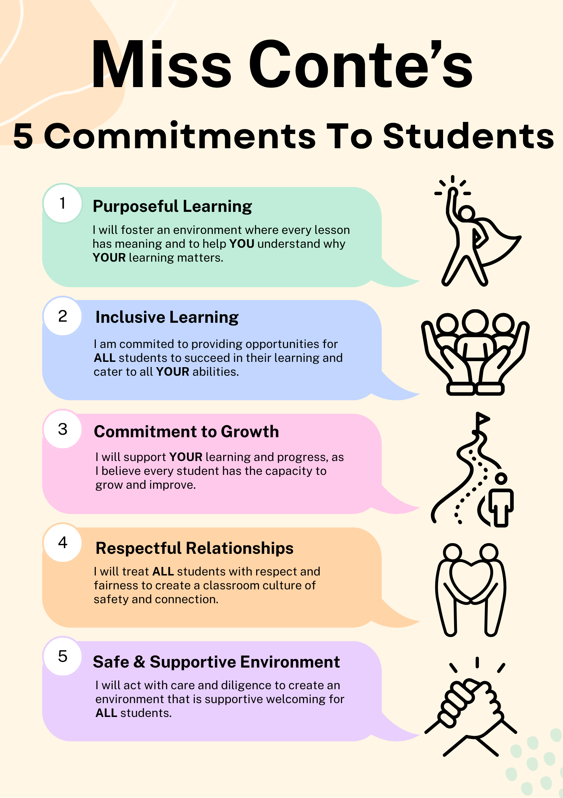

This is Me!
I am currently in my fourth and final year of a combined Bachelor of Education (Secondary) and Bachelor of Arts (Design Innovation and Technologies) at university. Throughout my studies, I have developed a strong foundation in both educational theory and practical teaching strategies, particularly in the areas of design and technology. My academic journey has deepened my understanding of curriculum development, student engagement, and innovative teaching practices tailored to 21st-century learners.
Alongside my studies, I work in a high school setting where I teach Technology Mandatory and Food Technology to students from Years 7 to 12. This hands-on experience has further fuelled my passion for education and solidified my desire to specialise in this area. I am deeply committed to helping students grow both academically and personally, and I find great fulfilment in creating supportive, inclusive learning environments where all students can thrive. My passion for teaching stems from a genuine desire to make a positive impact on young people's lives through meaningful and practical learning experiences.
My Commitment to Students
As a teacher, my commitment to students in the classroom is fundamental. I have attached below my Code of Conduct Commitment to Students that I display in the classroom:
To uphold the values and expectations of teachers, it is important to follow the NSW Department of Education Code of Conduct. This includes how to act professionally, treating students, colleagues and the wider community with respect to ensure a safe and supportive environment.
Click here to read about the NSW Department of Education Code of Conduct